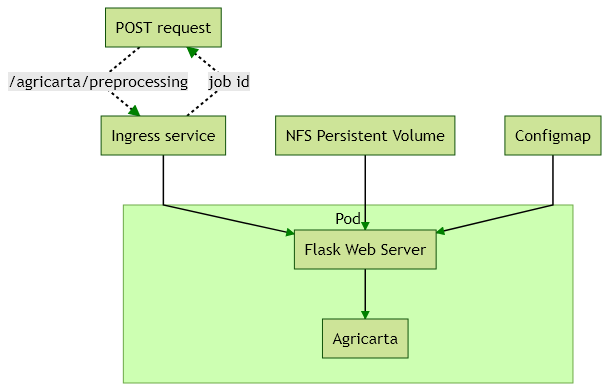

Example 1 - Simple - Agricarta Preprocessing¶
Contents
Summary¶
The first example is as simple as you can get for running an application on Kubernetes. We will have one pod with one container, one service, one configmap, with a simple Flask web server wrapper around the application. Data will be stored on NFS persistent volumes with a simple file to indicate processing status. Our input data is already stored on an NFS share, so we can mount that inside our pod. For future improvements, you could look to storing the data as S3 objects to make deployment to the cloud easier, in addition to leveraging GDAL’s ability to load from S3 data sources to make incremental networked file loads possible.
Architecture¶
Prerequisites¶
Imagery data stored on an NFS network share that is accessible to our cluster. For this example we are going to create 2 NFS exports that will be used to store the data inputs and outputs. On the NFS server, you will need to create the directory, edit the /etc/exports file, and restart the nfs-kernel-server. There will also be datasets required for processing that we will mount from a NFS share. All of these shares will be mounted using persistent volume claims inside the container.
You can verify the new mounts are accessible by running showmount -e <NFS server IP> from the cluster node machines.
Build the Container¶
Here’s the Dockerfile we will use:
FROM ubuntu:18.04
COPY ./requirements.txt /code/requirements.txt
WORKDIR /code
RUN apt update
RUN apt install -y software-properties-common build-essential
RUN apt-add-repository -y ppa:deadsnakes/ppa
RUN apt update
RUN apt install -y python3.7 python3.7-dev python3.7-venv python3-pip zlib1g zlib1g-dev libpng-dev libjpeg-dev
RUN python3.7 -m pip install --upgrade pip
RUN python3.7 -m pip install numpy
RUN apt install -y gdal-bin gdal-data libgdal-dev
RUN python3.7 -m pip install gdal==`gdal-config --version` --global-option=build_ext --global-option="-I/usr/include/gdal/"
RUN python3.7 -m pip install -r /code/requirements.txt
COPY . /code
EXPOSE 5000
#CMD ["gunicorn", "--bind", "0.0.0.0:5000", "--log-level=debug", "jobmanager.wsgi"]
Service¶
For the service we will use a Nodeport, but if we had easy access to creating DNS entries, an Ingress would be preferable.
apiVersion: v1
kind: Service
metadata:
name: agricarta-nodeport
spec:
selector:
app: agricarta
ports:
- protocol: "TCP"
port: 5000
targetPort: 5000
nodePort: 30199
type: NodePort
Deployment¶
The important parts of the deployment are the single container, which starts our Flask server, and the volume mounts, one for the NFS that our imagery is mounted on, and one for the configmap that stores our generic config options.
apiVersion: apps/v1
kind: Deployment
metadata:
name: agricarta
spec:
selector:
matchLabels:
app: agricarta
replicas: 1
template:
metadata:
labels:
app: agricarta
spec:
containers:
- name: agricarta
image: registry.kub-eo.agr.gc.ca/agricarta:v0.0.2
env:
- name: FLASK_APP
value: server.py
- name: FLASK_DEBUG
value: "1"
command: ["flask"] # env FLASK_APP=server.py FLASK_DEBUG=1 flask run --host 0.0.0.0
args:
[
"run",
"--host",
"0.0.0.0"
]
ports:
- containerPort: 5000
protocol: TCP
imagePullPolicy: Always
volumeMounts:
- name: nfs-miniostorage-volume
mountPath: /code/miniostorage
- mountPath: /code/config.yaml
subPath: config.yaml
name: agricarta-preprocessing-config-volume
imagePullSecrets:
- name: regcred
volumes:
- name: nfs-miniostorage-volume
persistentVolumeClaim:
claimName: nfs-pvc-miniostorage
- configMap:
name: agricarta-preprocessing-config
items:
- key: config.yaml
path: config.yaml
name: agricarta-preprocessing-config-volume
Configmaps¶
For the configmap, we are using a config.yaml file for the generic options, and the specific job options will be set by a JSON object in the POST request for our API.
ROOT_DIR: /code
# WORKING_DIR: /code/workingdir
DEPENDENCIES_DIR: /code/miniostorage/required_datasets
SRTM_DIR: /code/miniostorage/required_datasets/dem/SRTM41
IMAGERY_STORAGE: /code/miniostorage
# RESOLUTION: 10
# CPU_CORES: 6
# LOGGING_DIR: /code/logs
LOGGING_CONFIG:
console_level: DEBUG
file_level: DEBUG
# DELETE_INTERMEDIATE: True
# Projection as PROJ4 string as string
PROJECTION: "+proj=aea +lat_1=44.75 +lat_2=55.75 +lat_0=40 +lon_0=-96 +x_0=0 +y_0=0 +ellps=WGS84 +datum=WGS84 +units=m +no_defs"
# Imagery System Parameters
# NOTE: Custom parameters can be defined. Bellow is an example of the defaults
# System will use defaults if 'params' NOT defined within this file
# LC8 'products' --> dn = Digital Number
# radiance = Spectral Radiance
# sr = Surface Reflectance
# toa = Top of Atmosphere Reflectance
# RCM / RS2 'filter' --> gamma = Gamma Filter
# RCM / RS2 'modes' --> W2 = Wide Beam #2
# RCM / RS2 'units' --> amp = Amplitude
# dB = Decibel
# pow = Power
PARAMS:
LC8:
bands:
- B2
- B3
- B4
- B5
- B6
- B7
product: sr
resamp_clip: True
RCM:
bands:
- CH
- CV
- HH
- HV
- VH
- VV
RS2:
filter: gamma
modes:
- W2
S2:
bands:
- B02
- B03
- B04
- B05
- B8A
- B11
- B12
resamp_clip: True
The command we use to create the configmap from the config.yaml file is:
kubectl create configmap agricarta-preprocessing-config --from-file config.yaml
Persistent Volume and Claim¶
The persistent volume is a NFS share that we have access to inside the cluster and out, so we can mount it as a regular network share in addition to using it as a persistent volume.
apiVersion: v1
kind: PersistentVolume
metadata:
name: nfs-pv-miniostorage
spec:
capacity:
storage: 10Ti
accessModes:
- ReadWriteMany
persistentVolumeReclaimPolicy: Retain
nfs:
path: /mnt/md0/minio_storage
server: 10.117.206.94
readOnly: false
apiVersion: v1
kind: PersistentVolumeClaim
metadata:
name: nfs-pvc-miniostorage
spec:
accessModes:
- ReadWriteMany
resources:
requests:
storage: 10Ti
API¶
The Nodeport service means our API is accessible on port 30199 on the node through the nodes’ hostnames or IP addresses. The end point is /agricarta/preprocessing, it supports the POST HTTP method, and the processing parameters are JSON data that you include with the POST request.
{
"imagery_list": ["LC08_L1TP_015028_20200814_20200822_01_T1", "LC08_L1TP_015029_20200814_20200822_01_T1"],
"resolution": 10,
"cores": 2,
"delete_intermediate": false
}
We can use Postman to test our API.
Data Management and Access¶
Because we have access to the NFS share with the imagery we are using, we can use the NFS share to host the preprocessing results. Thus the results are acessible on the NFS share and the S3 Minio instance that NFS share is also backing.
Flask wrapper¶
server.py is a Flask web server instance that we use to control our application. We run the server in our container with the command flask run --host 0.0.0.0 as seen above in our deployment definition.
from flask import Flask, request
import uuid
import subprocess
app = Flask(__name__)
@app.route("/")
def hello():
return "Hello, World!"
@app.route('/agricarta/preprocessing', methods=['POST'])
def login():
if request.method == 'POST':
json = request.get_json()
print(json)
job_id = uuid.uuid4()
# example sub process command
# python3.7 server_preprocessing.py
# LC08_L1TP_042025_20200624_20200707_01_T1 LC08_L1TP_042026_20200624_20200707_01_T1 /code/workingdir config.yaml UNIQUEJOBID 10 4 True
result = subprocess.Popen(["python3.7",
"server_preprocessing.py",
*json["imagery_list"],
"/code/workingdir",
"config.yaml",
str(job_id),
str(json["resolution"]),
str(json["cores"]),
str(json["delete_intermediate"])])
# the code below is executed if the request method
# was GET or the credentials were invalid
return str(job_id)
Preprocessing Wrapper¶
We need to create a preprocessing wrapper that calls the Agricarta preprocessing module which accepts command line args and can read our general config.yaml configuration file.
preprocessing_server.py is similar to the 1_preprocessing.py executor.
import click
import logging
import yaml
from pathlib import Path
import os
import shutil
import tarfile
import agricarta as ag
from utilities.common import ConfigFileProblem, ConfigValueMissing
REQUIRED_CONFIG_KEYS = [
"ROOT_DIR",
"IMAGERY_STORAGE",
"DEPENDENCIES_DIR",
"SRTM_DIR",
"LOGGING_CONFIG",
"PROJECTION",
"PARAMS",
]
@click.command()
@click.argument('imagery_names', nargs=-1)
@click.argument('working_dir', type=click.Path(exists=True))
@click.argument('config', type=click.Path(exists=True))
@click.argument('job_id')
@click.argument('resolution')
@click.argument('cores')
@click.argument('delete_intermediate')
def start(imagery_names, working_dir, config, resolution, job_id, delete_intermediate=True, cores=4):
job_result_log = []
# Load config from config.yaml
try:
with open(config, "r") as stream:
config = yaml.safe_load(stream)
except yaml.YAMLError as e:
logging.error("Problem loading config... exiting...")
job_result_log.append("Problem loading config")
except FileNotFoundError as e:
logging.error(f"Missing config file with path {args.config}")
job_result_log.append("Missing config file")
except BaseException as e:
logging.error("Unknown problem occurred while loading config")
job_result_log.append("Problem occurred while loading config")
job_result_log.append(f"Imagery names: {','.join(imagery_names)}")
job_result_log.append(f"Job id: {job_id}")
job_result_log.append(f"Working dir: {working_dir}")
job_result_log.append(f"Resolution: {resolution}")
job_result_log.append(f"Delete intermediate: {delete_intermediate}")
job_result_log.append(f"Cores: {cores}")
JOB_DIR = Path(working_dir, job_id)
IMAGERY_DIR = Path(JOB_DIR, 'imagery')
OUTPUT_DIR = Path(JOB_DIR, 'output')
os.mkdir(JOB_DIR)
os.mkdir(IMAGERY_DIR)
os.mkdir(OUTPUT_DIR)
# Before this is called, make sure all the appropriate folders are created based on the job id
# 1. Create 'imagery' dir, 'output_dir', inside 'job_id' dir
# 2. Copy image from imagery storage based on the image type
# 3. Once all imagery is found, run the preprocessing module
for image in imagery_names:
# Determine image type
if image.startswith('LC08'):
print('Landsat image')
pathrow = image.split('_')[2]
path = pathrow[0:3]
row = pathrow[3:6]
image_path = Path(config['IMAGERY_STORAGE'], "l8-l2a-products", "tiles", path, row, image)
if image_path.exists():
print('Image exists')
job_result_log.append(f"Image: {image} FOUND")
shutil.copytree(image_path, Path(IMAGERY_DIR, image))
print("Image copied")
job_result_log.append(f"Image: {image} COPIED")
with tarfile.open(Path(IMAGERY_DIR, image + '.tar.gz'), "w:gz") as tar:
tar.add(Path(IMAGERY_DIR, image), arcname='.')
else:
print("imagery not found")
job_result_log.append(f"Image: {image} NOT FOUND")
try:
job_result_log.append('Preprocessing started')
ag.preprocessing.process_multiple_images([str(IMAGERY_DIR)],
str(Path(OUTPUT_DIR, "preprocess")),
str(Path(OUTPUT_DIR, "metadata")),
params=config['PARAMS'],
output_projection=config['PROJECTION'],
output_resolution=int(resolution),
align_origin=True,
srtm_path=config['SRTM_DIR'],
required_datasets=config['DEPENDENCIES_DIR'],
delete_intermediate=delete_intermediate,
log_config=None,
ncores=int(cores)
)
except BaseException as e:
logging.error('| EXCEPTION |: Encountered a generic exception at preprocessing task '
'scheduler. Details: {}'.format(e))
job_result_log.append("Exception occured, preprocessing failed")
job_result_log.append(str(e))
else:
job_result_log.append("Preprocessing finished")
with open(Path(JOB_DIR, "job_log.txt"), "w") as outfile:
outfile.write("\n".join(job_result_log))
shutil.rmtree(IMAGERY_DIR)
shutil.copytree(JOB_DIR, Path(config["IMAGERY_STORAGE"], "agricarta", "preprocessing", job_id))
if __name__ == "__main__":
start()